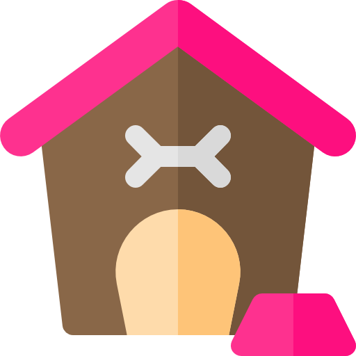
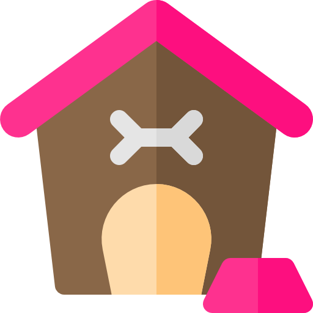
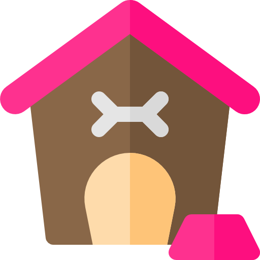
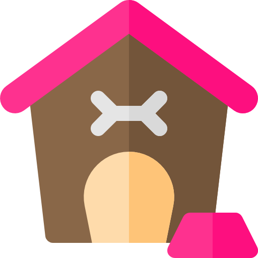

I'm Happy Jai
A Mini Pomeranian
 



A 6 years old boy dog. He is shy and seldom bark.
He is curious at everything and easy to lost his attention even having his favourite food.
Happy is a mini dog weighing only 3.5 pounds. He is cream-colored, with a pair of big eyes and smiley face.

Happy is typically friendly and playful. He is also alert and aware of changes in their environment, but seldom barking in any situation.
Durian is his the most favorite food. He will drool and lick his lips at the sight of durian, begs for it and wants more.